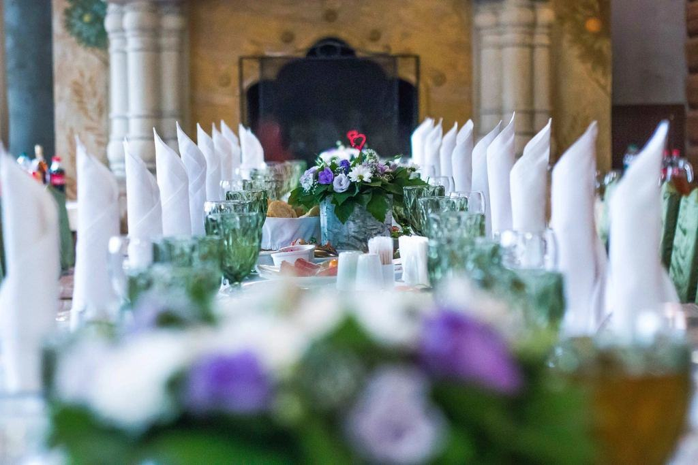

Paddla ut två, paddla hem gifta
Vi planerar och fotograferar elopements i Dalsland: kanot över Lelång, vigsel på en klippa i Tresticklan och middag vid elden.


Vi pratar paddling först
Det viktigaste samtalet handlar inte om bilder utan om hur bekväma ni är på vatten och i skogen. Har ni aldrig paddlat tar Per med er på en provtur dagen innan. Sedan planerar vi platsen efter er kondition och er dröm.
Bor ni långt bort kan ni sova i gästhuset på vår gård natten före.
Elopements i Dalsland
- Levererat

Leonie & Mats
Tältnatt på en ö och vigsel klockan sju på morgonen.
- Levererat

Ingrid & Ola
Paddling genom akvedukten och vigsel vid slussarna.
- Levererat

Sophie & Ben
Sju kilometer till fots och löften på en hällmark mot Norge.
- Levererat

Nina & Joel
Höststorm, timmerstuga och gös i glöden.
- Levererat

Hanne & Sindre
Ett norskt par, en svensk vigselförrättare och en ö helt för sig själva.
- Bokat

Clara & Moritz
Bokat till juni – vigsel på samma ö som vårt första par.
Par som paddlade ut
”Vi ville inte ha 120 gäster och en DJ. Vi ville ha en sjö, varandra och någon som kunde fotografera det. Det fick vi.”
Nina & Joel · Stora Le”Per lagade den bästa middagen vi ätit, på en sten. Ylva fotograferade när vi somnade vid elden.”
Sophie B. · Göteborg”Vi hade aldrig paddlat. Efter provturen kändes det enkelt, och klänningen blev inte ens blöt.”
Från samtal till sjö
- 1

Videosamtal
Vi pratar om hur mycket ni vill paddla, gå och sova ute – och om ni har paddlat förut.
- 2

Papper och plats
Ni ansöker om hindersprövning, vi bokar vigselförrättare och föreslår en ö eller hällmark.
- 3

Ut på sjön
Vi ses vid gården i Bengtsfors, packar kanoterna och paddlar ut i lugn takt.
- 4

Bilder och film
Galleri inom tre veckor och en kort drönarfilm från vattnet.
Tusen sjöar och inga gäster
Lommen drivs av Ylva Brodin, fotograf, och Per Brodin, kanotguide med tjugo år på Dalslands kanal. Vi bor på en gård utanför Bengtsfors och startade 2020 när ett par från Hamburg frågade om de kunde gifta sig på en ö i Lelång utan gäster. Sedan dess har vi gjort 70 elopements, nästan alla för par som bara vill vara två.
Allt ingår, från kanot till vigselförrättare
Halvdag
Kanot, vigsel på en ö, porträtt och fika.
18 000 kr5 timmar, för två- Drygt 200 bilder
- Vigselförrättare ingår
- Kanoter och flytvästar
- Galleri inom två veckor
- Vår favorit
Två dagar på sjön
Paddling, tältnatt, vigsel och middag vid elden.
32 000 kr2 dagar, 1 natt, för två- 400–500 bilder
- Tält, mat och utrustning
- Drönarfilm på två minuter
- Provtur dagen före
Tre dagar och stuga
Två nätter i timmerstugan och vigsel på Stora Le.
45 000 kr3 dagar, 2 nätter- Allt i Två dagar på sjön
- Timmerstuga på en udde
- Vandring i Tresticklan
- Album i linne 25 × 25 cm
Alla priser inklusive moms och avser två personer. Mat, kanoter och vigselförrättare ingår.
Senast från sjöarna

Morgondimma på Lelång
Leonie och Mats vaknade i tältet klockan fem och gifte sig när dimman lättade.
Läs mer
Vigsel vid Håverud
Ett par från Oslo paddlade genom akvedukten och gifte sig vid slussarna.
Läs mer
Ny stuga på Stora Le
För par som inte vill tälta har vi nu en timmerstuga utan el på en udde vid Stora Le.
Läs mer
Är vigseln juridiskt giltig?
Ja. Vigselförrättaren är förordnad av Länsstyrelsen och vi skickar in vigselbeviset. Ni behöver hindersprövning från Skatteverket först.
Behöver vi kunna paddla?
Nej. Per tar med er på en provtur och väljer en rutt efter er erfarenhet. Den kortaste paddlingen är 20 minuter.
Kan vi ha med gäster?
Upp till sex gäster går bra, men de flesta par kommer ensamma. Vittnen ordnar vi om ni behöver.
Vad händer om det blåser?
Vi har alltid en reservplats på land och flyttar hellre vigseln en timme än paddlar i hårt väder.
Måste vi tälta?
Nej. Det finns halvdagsvarianten och vår timmerstuga på Stora Le.
Tar ni emot par från utlandet?
Ja, ungefär hälften av våra par kommer från Norge, Tyskland och Nederländerna. Vi hjälper till med pappren för utländska medborgare.


När vill ni paddla ut?
Skriv vilken månad ni tänker er och om ni har paddlat förut. Ylva svarar när hon är tillbaka i land, senast inom två arbetsdagar.
- Telefon
- 070-174 06 46
- E-post
- ylva@lommen.se
- Öppettider
- Svarar vardagar 8–16